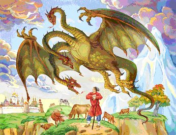

Die Schlüssel zu den zauberhaften Märchen
von Stämmen der Slawen und Arier
Damit die Informationen zum Volk kamen, gaben die slawisch -arischen Priester alles sakral -wendische Wissen, dem Volk in Form von Märchen zurück, in welchen die Information für die bildliche Wahrnehmung umgestaltet war. Die Märchen wurden Wort für Wort weiter geben, damit die Information ohne Entstellung oder Verzerrung ankam. Das, was die russo-arische Völker vom Kindesalter an aus den Märchen lernten, waren die wahren und alten Informationen, mit deren Hilfe das Kind ausgebildet wurde, um seine Welt besser zu erkennen. Märchen, Legenden, Sagen, Lieder, Gedichte, Geschichten, Sprichwörter u.ä. - das alles ist die alte Weisheit der slawisch -arischen Völker.
Das Wort "Byl" (riss. "Быль") ist von altrussischen Verb - "Byti" (russ."быти") entstanden, das heißt – es geschah in der Welt der Wirklichkeit (Jawi) oder auf deutsch gesagt - wahre Geschichte (historische Sage). Aber die „erfundene“ Geschichte (riss. "небыль") – was nicht in der Jawi (die Welt der Wirklichkeit grober Materie, Realität) geschah, aber in den Welten: Nawi (die Welten der Geister), Slawi (Ruhme - die Welt der Ahnen) oder Prawi (Lenke - die Welt der Götter), so heißt es – es geschah in anderer Form des Daseins.
Alle Erzählungen wurden von Materialisten – „Bewohnern, Einwohnern, Mitbewohnern“ als Märchen wahrgenommen, d.h. jenen Menschen, die sich in der dreiwertigen Entwicklung (3 Chakren Mensch) befinden und die Verbindung mit ihren Vorfahren und der Weisheit der Ahnen, verloren haben.
Am Ende jedes Märchen gab’s eine sprichwörtliche Redensart: "Das Märchen lügt und deutet an, wer das erkennt – der lernt daran". Später haben die Christen diese sprichwörtliche Redensart verzerrt: "Das Märchen lügt und deutet an - Prachtkerl erkennt und lernt daran". Warum dürfen nur die Prachtkerle und nicht die holde Maid (reine junge Frau) das Schicksal und die Bestimmung erkennen? Dies geschah, weil nach dem christlichen Lehren eine Frau, ein negatives Element ist. Im Unterschied zur slawischen Tradition, wo die Frau die Göttin und die Hüterin des Heimes und Heimfeuers verkörpert.
Außerdem waren solche Begriffe wie die Lüge und die Wahrheit verzerrt. In der slawischen Tradition, ist das Wort Wahrheit mit der wahren Welt - Prawi (die Welt der Götter) verbunden. Das Wort Nichtwahrheit ist es, was nicht zu der Welt Prawi gehört, aber auch eine Information ist. Unwahrheit – ist die verzerrte (gekrümmte) Information, die nicht aus der Jawi (Welt der Wirklichkeit) kommt. Und das Wort die Lüge bedeutete - die oberflächliche Information, die in dieser Gestalt (Bild) ins Innere eindringt.
Die Christen haben nicht nur die russischen Volksmärchen verzerrt, sondern auch eigene erdacht. In solchen Märchen ist der uralte Traum des christlichen Volkes vom "kostenlosen Leben - faulenzen" primär dargestellt. Während in den russischen Märchen die Hauptfiguren in ihrem Wirken immer nach dem Ziel streben.
Eines der Beispiele der Entstellungen und Verzerrungen ist das Märchen über "Die Rübe", die man von der frühesten Kindheit kennt. In der ursprünglichen russischen Variante zeigt das vorliegende Märchen auf die Wechselbeziehung zwischen den Generationen, sowie auf die Wechselwirkung der vorübergehenden Strukturen, der Formen des Lebens und der Formen der Existenz. (Abb. 1)
Abb. 1
In der modernen Variante dieses Märchens fehlt es noch an zwei Elementen, die von vornherein existieren - der Vater und die Mutter, ohne die sind es nur sieben Elemente, da es bei den Christen das siebenwertige System der Wahrnehmung (7 Chakren), im Unterschied zum russo-arischen neunwertigen System (9 Chakren) gibt.
In der ursprünglichen Variante, waren es neun Elemente, in einem jedem war eine symbolische Gestalt verborgen:
- Die Rübe - symbolisiert den Besitz und die Weisheit des Stammes (Familienstamm) und seine Wurzeln. Sie vereinigt symbolisch das irdische, unterirdische und das überirdische.
- Der Großvater - symbolisiert die Alte Weisheit.
- Die Großmutter - die Tradition des Hauses, das rationelle Wirtschaften (Hauswirtschaft).
- Der Vater - der Schutz und die Stütze.
- Die Mutter - die Liebe und die Fürsorge.
- Die Enkelin - symbolisiert die Nachkommenschaft.
- Der Hund - der Wohlstand im Familienstamm (den Hund wurde für den Schutz des Wohlstandes angeschafft).
- Die Katze - symbolisiert die wohltuende Lage im Stamm (die Katze — гармонизаторы der Energie des Menschen).
- Die Maus - symbolisiert den Wohlstand der Familie (es wurde angenommen, dass die Maus dort lebt, wo es die Überschüsse der Lebensmittel gibt).
Aber die Christen haben den Vater und die Mutter entfernt, und haben ihre Gestalten entfernt: den Schutz und die Stütze - mit der Kirche, und die Fürsorge und die Liebe - mit Christus ersetzt.
Bei den Russovölkern liegt der ursprüngliche Sinn dieses Märchens im Folgenden verborgen: die Verbindung mit dem Stamm und dem Stammgedächtnis zu haben, in der Harmonie mit den Verwandten zu leben und das Glück in der Familie zu haben.
Es gibt noch ein Märchen, das viel verzerrt wurde, dass ist das Märchen "Kolobok" zu Deutsch "Bällchen". Hier bieten wir ihnen die ursprüngliche Variante an:
„Tarch Perun erbat Djiwa – erschaffe Kolobok (das "Bällchen"). Und sie rieb den Swarogskreis ab, und fegte die Sternenhäuser aus und formte Kolobok, sie legte ihn in das Fenster des Sternenhauses vom „Rod“ (Stamm) und da, erleuchtete der Kolobok und rollte auf dem Swarog–Wege fort. Aber er rollte kurz, kam ins Sternenhaus des Wildschweins (Äber) und das Wildschwein biss ihn die Seite ab, aber fraß ihn nicht ganz auf. Dann rollte Kolobok fort bis zum Sternenhaus des Schwanes und der Schwan pickte ein Teil aus ihn raus und im Sternhaus des Raben– pickte der Rabe ihm ein Teilchen aus, in Sternenhaus des Bären - stauchte der Bär eine Seite ein. Der Wolf im seinem Sternenhaus fraß fast die Hälfte auf und als Kolobok ins Sternenhaus des Fuchses kam, da fraß der Fuchs ihn ganz“ (Abb. 2)
Abb. 2
Dieses Märchen ist eine bildliche Beschreibung der astronomischen Beobachtung unseren Vorfahren über die Bewegung des Mondes am Horizont, vom Vollmond bis zum Neumond. Der Vollmond nimmt seinen Anfang im Sternenhaus (Sternzeichen) Tarcha und Dschiwa von Swarogkreis (Abb. 3) und endet im Sternenhaus des Fuchses im Neumond.
Abb. 3
Mit Hilfe dieses Märchens bekamen die Kinder die Anfangserkenntnisse in Astronomie, ihnen zeigte man die gegebenen Sternenhäuser (die Sternbilder) und sie studierten bildlich die Sternkarte der Welt.
Um alte Erzählungen (Märchen) und ihren Sinn zu verstehen, der ihnen gegeben war, muss man auf die moderne Weltwahrnehmung verzichten und durch die Augen der Menschen, die zu den alten Zeiten lebten auf die Welt blicken. Es ist wichtig die bildliche Wahrnehmung zu haben, die unsere Vorfahren hatten.
Als Beispiel werden wir die Beschreibung der Drachen Gorynytsch aus den altertümlichen Märchen nehmen: "Die schwarze Wolke kam angeflogen und verdeckte die rote Jarilo (Sonne). Der starke Wind ist aufgekommen und in der schwarze Wolke ist der Drache Gorynytsch (dreiköpfige) herbei geflogen. Er zerstörte die Häuser, die wirbelte die Heuschober auf, und trug die Menschen und das Vieh in Gefangenschaft fort" (Abb.4)

Abb.4
Die Gestalt des "Drachen" - bedeutet rund und lang, wie die Schlange und "Gorynytsch" - hoch, wie ein Berg ist. In der gegebenen Beschreibung handelt es sich um solche natürliche Erscheinungen, wie die Windhose oder Tornado. Der Drache Gorynytsch kann dreiköpfig (d.h. aus der Wolke gehen 3 Trichter raus) und neunköpfig, usw. sein.
Besonders stark verzerrt war die bildliche Gestalt von der Heldin aus der russischem Volksmärchen, die die Christen Baba Jaga (Weib Jaga) nannten. In Wirklichkeit war es die russo-arische Gestalt von Baba Yoga (Mütterchen - Yoginja) - die Beschützerin und Hüterin der Waisenkinder und überhaupt aller Kinder. Sie wanderte über das Land auf dem feurigen himmlischen Wagen und sie sammelte in den Städten und Dörfern die Waisenkinder.
Man erkannte sie an ihren Stiefeln, die mit Gold geschmückt waren und man nannte sie Großmütterchen Yoga - Goldenes Bein.
Sie brachte die Waisenkinder in die Vorgebirgseinsiedelei, am Fuß der Iriey Berge (Altai), wo sie die Kinder mittels Feuer Ritual den alten Göttern weihte. Dazu gab es den speziellen Tempel des Stammes (Rod), der innerhalb des Berges ausgemeißelt war und daneben im Felsen gab es eine spezielle Vertiefung (Grotte), - die „Pesche Ra“ hieß. Aus ihr trat ein Steinsockel heraus, den man Spaten nannte. In eine der Vertiefung hat Baba Yoga die schlafenden Waisenkinder gelegt und in die andere trockenes Reisig, wonach sie den Spaten zurück in „Pesche Ra“ schob und dann das Reisig anzündete. Wenn der Spaten in „Pesche Ra“ eingeschoben wurde, schob ein spezieller Mechanismus eine Steinplatte auf den Vorsprung vom Spaten und trennte die Vertiefung mit dem Kind vom brennenden Reisig ab. Dieses Ritual bedeutete, dass die Waisenkinder den Alten Göttern geweiht waren und über ihr weltliches Leben niemand mehr erfahren wird. Sobald das Feuer brannte, nahmen die Priester des Stammes die Waisenkinder in die Räume des Tempels auf und zogen sie als Stammpriester und Priesterinnen groß (Abb. 5)
Baba Yoga (Mütterchen - Yoginja Baba Jaga (Weib Jaga)
Abb.5
Diese Gestalt der schönen jungen Göttin wurde in die Gestalt der alten, bösen und buckeligen Frau ausgetauscht, die die kleinen Kinder stiehlt, sie im Ofen brät und auf isst. In dem verzerrten Märchen, lebt sie in einer Hütte auf Hühnerbeinen, umgeben von einem Pfahlzaun mit Schädeln auf den Spitzen. In Wirklichkeit meinten die Slawen, dass der Schädel des gestorbenen Tieres die Weisheit und die Kraft desselben Tier bewahrt. Und wenn der Schädel auf dem Pfahle angebracht wird, so schafft man sich den Schutzkreis gegen die Widersacher aus der Kraft und Weisheit der Tiere. Das machte auch Baba Yoga. Es gibt kein Märchen, wo die Baba Jaga einen Kind oder einen Menschen geessen hatt, sie erschreckte, erprobt und lehrte nur. Und ihre Hütte stand nicht auf Hühnerbeinen, sonder in Wirklichkeit auf Rauch- und feurigen Säulen, d.h. es war ein Flugapparat (der feurige himmlische Wagen). Er hatte noch eine Besonderheit, denn er konnte sich drehen, wenn Baba Yoga sagte: " Häuslein, Häuslein drehe dich um, zu dem Wald mit Hintern rum und zu mir von Vorne rum."
In den Märchen erkennen wir die Beschreibungen der Technologien und der Errungenschaften der alten russo-arischen Zivilisation, zum Beispiel: die Tischlein deck Dich, der fliegende Teppich, die Tarnkappe, das Zauber -Schwert, die Zauber Spiegel, der Knäuel und der Faden, der den Weg zeigt usw.
Im Märchen über den Hellen Falken begibt sich die Heldin - Nastenka zu dem Hellen Falken (Abb. 6) „dreiaufzehnten“ (drei auf zehn-dreizehn) Sternenhaus. Das dreizehnte Sternenhaus (Sternbild) im Swarogskreis ist Sternzeichen Finist (Abb. 3). Das heißt, sie hatte den Weg ins anderes Sonnensystem, mit neun Raumschiffen und neun mal Umsteigen, auf dem Weg neun Paare der eisernen Stiefel (die Schuhe mit der künstlichen Gravitation, für die Bewegung im Raumschiff) verbraucht und aß neun eiserne Brote (die Nahrung der Astronauten, die in der metallischen Verpackung aufbewahrt wird).
Abb. 6
Nicht jeder Mensch ist fähig, die Alte Weisheit in der ursprünglichen Erläuterung zu verstehen, man muss sie mit Geist, Seele und Herz wahrnehmen können. Das ist gut im Märchen über das Hühnchen Rjabu bildlich dargestellt. Es legte ein goldenes Ei; Der Großvater wollte es aufschlagen und schaffte es nicht; die Großmutter daraufhin ebenso wenig; als jedoch eine Maus vorbeilief und mit den Schwanz wedelte, fiel das Ei und zerbrach (Abb. 7)
Abb. 7
Als der Großvater und Großmutter zu trauern begannen, da sagte das Hühnchen – ich werde noch ein Ei legen, allerdings diesmal kein goldenes mehr. Hier trägt das goldene Ei in sich die Gestalt der geheimen Stammesweisheit, die die Seele betrifft und die man kurzerhand nicht nehmen kann - egal wie lange man auch schlägt. Gleichzeitig kann dieses System durch zufällige Berührung bis auf wenige Fragmente zerstört werden. Deshalb, sind für die Menschen, welche noch nicht das Niveau erreicht haben, um das Geheime (goldenes Ei) zu verstehen, die einfachen Informationen (normales Ei) vorrangig.
Die russischen Volksmärchen sind eine vererbte Schatzkammer der geistigen Erfahrung unserer Vorfahren. Es ist ihr Wissen über die Gesetze und des Daseins in der Welten Prawi, Slawi, Jawi, Nawi und Sdrawi. Für den bewussten Menschen stellen diese Märchen unerschöpflich „Brunnen“ der Weisheit dar, der den Menschen ermöglicht bewusst den tieferen Sinn des Lebens zu erfahren, das von unseren Ahnen weiter gegeben wurde.
Durch aufmerksames Lesen und Forschung der zauberhaften Märchen zeigen sich die 9 Bereiche der Sinndeutungen auf:
DIE NOT
Infolge des Verstoßes fängt die Not, der Test oder eine Prüfung an. Damit die Not endet, muss jemand sich auf die Reise machen und der jenige braucht eine Rüstung oder entsprechendes Zubehör (oft magische Gegenstände). Am Ende gibt’s immer einen Erfolg im Wohle für alle.
DIE AUSRÜSTUNG DES HELDEN FÜR DEN WEG
Die Ausrüstung besteht aus einem Schwert oder magischen Stab, Nahrung und Schuhe – geistige Waffen, die Fähigkeiten sich mit Prana (Lebensenergie, Atemkraft) zu ernähren und Apana (entfernende Hauch, ausscheidende Energie) auszuscheiden – die kosmische Kraft. Man muss auch die Fähigkeit haben sein Körper, die Jawi Welt verlassen zu können ohne zu sterben.
DAS ERHALTEN DES ZAUBERMITTELS
Damit der Held sein Ziel erreichen kann, bekommt er oft magische Geschenke und Helfer zur Seite gestellt. In der Regel wird man in den Märchen von Baba Jaga beschenkt («Baba» - das Weib - sehr geachtet, «Jaga» - das Opfergabe - "Yoga" - die Verbindung mit Höchsten Gott). Es existieren drei verschiedene Gestalten (symbolische Bildnisse) für Weib Jaga:
- Jaga – die Gönnerin, die Schenkende, manchmal ist es ein alter Mann (Männchen) oder ein Tier (Totem), das heißt die Hilfe der Vorfahren.
- Jaga – die Entführerin, diese prüft den Helden in einem Test oder bestimmte Prüfung, nach dem er eine bestimmte Erfahrung bekommt und wird besser und vollkommender.
- Jaga – die Kriegerin, sie bestraft den Helden für die falschen Handlungen, das heißt sie richtet ihn auf den wahrhaften Weg aus. Sie ist die Vollzieherin des Karmagesetzes und die Vertreterin der Grenzkraft (Schwellenwächterin) von der Welt Slawi, Jawi und Nawi.
DAS EINWEIHUNGSRITUAL
Der Held soll dem Ritual unterzogen werden, das sich als ein Weg durch "den dichten, düsteren Wald" erweist, das heißt der Austritt aus dem Körper in die Welt Nawi (Astralreise). An der Schwellengrenze zwischen den Welten Nawi und Jawi – die Welt der Toten, gibt es immer einen Grenzposten – eine Hütte.
DIE HÜTTE AUF DER HÜHNERBEINEN
Der Eingang in die Hütte liegt in der Totenwelt – Nawi. Mit Hilfe der Beschwörung kann die Hütte gedreht werden und beim betreten der Hütte wird man von Baba Jaga nach dem Grund (Ziel) des Besuches gefragt: «Bist Du auf der Suche oder bist Du auf der Flucht?». Der Held des Märchens antwortet nie sofort, sonder sagt folgendes: «Bevor Du Fragen stellst, gib mir was zu essen und zu trinken, führe mich in die Banja (Sauna) und danach kannst Du mich nach den Nachrichten fragen». Die Forderung nach dem Essen, zeigt dass der Held keine Angst von den anderen Welten und ihrer Nahrung hat und das er sich nicht fürchtet. Die Sauna ist das russische Form der Yoga, dadurch führt der Held die Kraft und Stärke aller seinen energetischen Körper vor. Wonach die Baba-Jaga den Helden des Märchens achtet und beginnt ihm zu helfen. Ein lebendige Mensch ist für Baba Jaga nicht sichtbar, sie hört ihn oder sie riecht ihn. Sie erkennt die lebendigen Menschen, weil sie riechen, lachen, gähnen und schlafen und daraus folgen die entsprechenden Prüfungen.
DIE PRÜFUNG
Die Prüfung besteht in der Ausführung der Aufgabe: «Gehe dorthin – weis nicht wohin und bringe das – weis nicht was». Der Ort wohin der Held geschickt wird, ist «das neunte Reich, der zehnte Staat», das heißt die Welt Slawi. Dieses Ort befindet sich in einem anderen Dimensionsraum und man muss jenes bringen, was unmöglich ist aus der Slawi Welt zu bringen. Man muss über alle geistigen Eigenschaften des Menschen verfügen, um es vorzuführen, dass diese Möglichkeit im Gedächtnis nur auf dem DNA- oder Gen-Niveau des höchsten Bewusstseins - der Weisheit der Vorfahren existiert.
Für den Beweis der geistigen Kraft muss der Held mit den magischen Aufgaben zurechtkommen. Meistens sind es sie drei in verschiedenen Folgeaufgaben: - in der Nacht Brot (Korn) zu säen, wachsen lassen und ernten; - in der Nacht den goldenen Palast mit einer Brücke zu bauen, ein wundervollen Garten zu pflanzen: «… sehe zu, es soll bis Morgen zur der Morgendämmerung (Morgenröte) hinter der neunte Werst (9 x 1066,8 m) auf dem Meer das goldene Reich stehen. Die jene Brücke soll mit teuerem Samt bezogen sein und neben den Geländern zur beiden Seiten sollen die wundervollen Bäume wachsen, auf den die Singvögel mit verschiedenen Stimmen singen. Wirst Du mit diese Aufgabe bis Morgen nicht fertig werden, befehle ich dich in vier Teile zuvierteln». Natürlich, kann das alles nur der Jenige vollbringen, wer die Gesetzmäßigkeiten anderen Welten kennt und sie beherrscht, das heißt, einen hochentwickelten geistigen Körper haben.
Der Beherrschung von der Macht (Kraft) von dem Helden – die mystischen Fähigkeiten des geistigen Körper – ist nicht das Ziel, es ist nur das Mittel für die Verwirklichung der Heldentat – Schlangen- oder Drachenkampf.
DER DRACHENKAMPF
In allen alten russischen Märchen wird die die Gestalt der Drache auf folgende Weise beschreiben: Der Drache konnte fliegen, seine Flügel waren wie Feuer. Der Drache wird immer in Verbindung mit Feuer dargestellt. Die sinnliche Gestalt der Drachen oder Schlange – ist die Kundalini – die geistige Kraft des Menschen, die harmonische Arbeit aller Chakrasysteme. In diesem Fall soll der Held auf dem energetischen Niveau drei Kämpfen bestehen: «Im Feuer nicht verbrennen, im Wasser nicht versinken und in dem Kampf der Sieger sein». Der Drache im Märchen droht immer mit Feuer: «Ich werde dein Reich (d.h. den Körper) mit Feuer verbrennen und deine Asche werde ich verwehen». In den russischen Volksmärchen ist der Drache (Schlange) ein Hüter der Grenzen ins himmlische Reich. Die Grenze selbst wird wie ein feuriges Fluss beschrieben, der Smorodinka (nord. Gjöll, griech. Acheron, Styx u.a.) genannt. Über diesen Fluss führt eine Brücke. Es kann nur der Jenige über die Grenze gehen, wer tatsächlich die geistige Kraft erreicht hat und in allen Welten wirken kann. Und jene Brücke kann nur dann passiert werden, wenn man den Drachen (die Schlange) getötet hat, d.h. die eigene Mängel besieg hat. Der Drache ist unsterblich und unbesiegbar für die, die nicht Geweiht sind und es kann ihn nur ein bestimmter Held zerstören. Der Drache versucht niemals den Helden mit den Waffen, den Klauen oder den Zähnen zu töten, er versucht den Helden in die Erde (d.h. in die Sünde) einzuschlagen und so ihn zu zerstören. Den Drachen kann nur dann getötet werden, wenn man ihn alle seine Köpfe abschlägt. Das bedeutet der Sieg über die eigenen Gefühle. Aber diese Köpfe haben die wunderliche Eigenschaft von neuem zu wachsen, weil die Macht der Gefühle bei ihrer Befriedigung zunimmt: «Hat dem Zauber-Ungeheuer neun Köpfe abgeschlagen aber das Zauber-Ungeheuer hat sie aufgefangen, mit dem feurigen Finger geschnipst und die Köpfe sind wieder angewachsen» (das Zauber-Ungeheuer stellt im Märchen das Vergnügen, die Lüsternheit dar, d.h. der Hauptgegner des Helden ist das Vergnügen und die Gelüste). Nur nachdem der feurige Finger (die Lüsternheit, Gelüste) abgeschlagen wird, gelingt es dem Helden alle Köpfe der Drachen (der Schlange) abzuschlagen.
DIE AHNENBELOHNUNG
In allen russo-arischen Stammesmärchen wird der Held nach dem Bestehens aller Prüfungen von den Ahnenstamm belohnt: eine schöne Frau (holde Meid), die dann seine Gattin wird. Also ist der Sinn des Märchens – die Liebe - die Harmonie zwischen männlichen und weiblichen Anfang, ein sich liebendes Paar, das ins familiäre eheliche Stammesbündnis übergeht. Und das Märchen endet immer mit der Hochzeit. Hoch-Zeit - die Himmlische Tat der Götter und die Liebe (auf russisch LEU-BO-W`= „LEU“– Leute, „BO“– Götter, „WI“– Wissende) – die Menschen, die das Göttlichen bewusst sind. Und von hier kommt es zu folgenden Ausdruck "Alle Hochzeiten werden in dem Himmel besiegelt».
Der Hauptsinn der märchenhaften Vorschriften unserer weisen Vorfahren besteht in der Stammkraft, die Beachtung der Gebote der Götter: die Reinheit des Stammes (des Geschlechts), die Reinheit der Absichten, die eheliche Treue, die Ehre und das Gewissen und so mit die Fortsetzung des Geschlechtes in der Geburt der Kinder. Damit die Götter der Stammes geboren werden und auf der Erde leben können.
Diese Wunder-Märchen erklären und vorbereiten die Kinder der russo-arischen Stämme zur Errungenschaft der vollen Vollkommenheit, durch das Erreichen von geistige, seelische und körperliche Dreieinheit (Dreifaltigkeit) in der Harmonie mit der wedische Weltwahrnehmung.
So werden die Stammesweden - Stammeswissen aller Völker auf der Midgard-Erde, durch die Märchen von den Vorfahren an die Nachkommen weiter geben. Und mit Hilfe der Märchen ist das Erbe, die wedische Weisheit, die Bräuche, die Tradition und die Kultur der Völker erhalten geblieben.